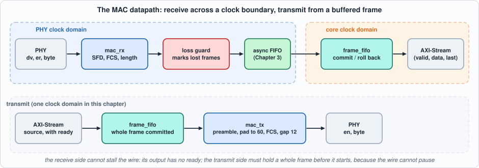
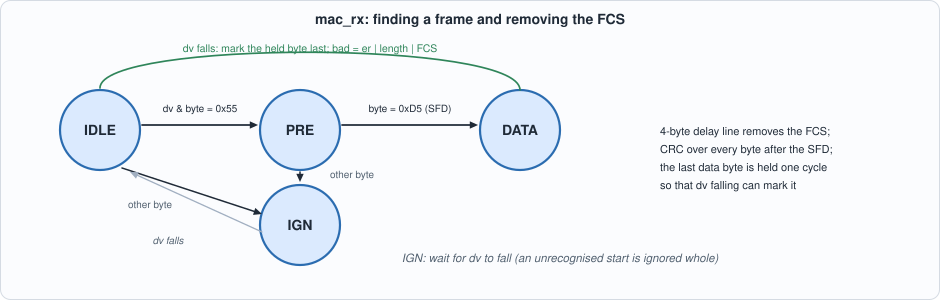
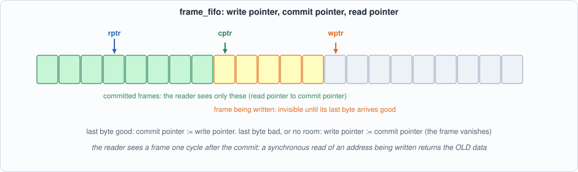
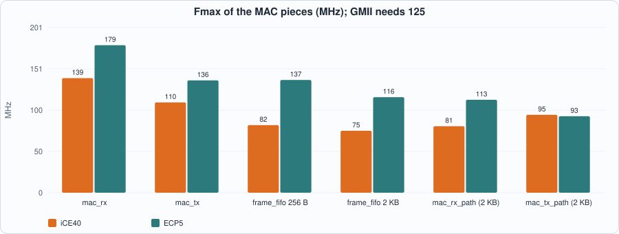
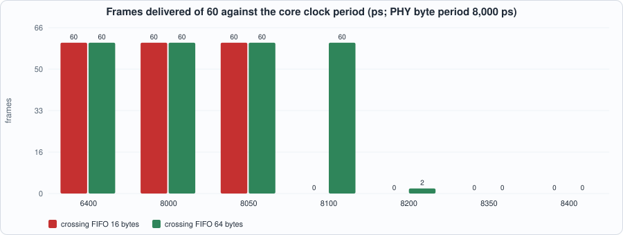

8. The MAC Datapath: Receive and Transmit at the Byte Interface, a Block-RAM Frame Buffer, and the Clock Boundary¶
About the kestrels in this picture
- Mauritius kestrel (Falco punctatus) lives only on the island of Mauritius. By the mid-1970s only a handful of wild birds were known (the figure usually quoted is four); captive breeding and release programmes brought the population back to hundreds.
- Seychelles kestrel (Falco araeus) is found on the granitic islands of the Seychelles. It is a small kestrel that hunts lizards and insects in forest and around villages.
The scene is imaginary and the birds are stylised drawings.
What you will see: the Ethernet MAC at the byte interface of the PHY (GMII style: one byte per clock, a data-valid and an error signal): a receiver that finds the start of a frame, strips the FCS, checks it with Chapter 7's CRC and reports good and bad frames; a transmitter that builds the preamble, pads short frames, appends the FCS and keeps the inter-frame gap; a frame buffer in block RAM that commits a frame only when it has arrived whole and good, and rolls it back otherwise; and the clock boundary between the PHY clock and the core clock, with the question the chapter answers by measurement: how slow may the core clock be before frames are lost, and does a loss ever corrupt a frame?
What you need to know first: Chapters 3 (the asynchronous FIFO), 5 (block-RAM read styles) and 7 (the CRC). A frame is a sequence of bytes ended by a four-byte FCS.
What this chapter builds: rtl/mac.sv (mac_rx, mac_tx, frame_fifo, mac_rx_path, mac_tx_path), model/mac_gold.py (the specification, the PHY model and the stimulus), the testbenches tb/mac_rx_tb.sv, tb/mac_path_tb.sv, tb/mac_tx_tb.sv, tb/ff_tb.sv, and tools/ch08_example_a.py, tools/ch08_example_b.py, tools/ch08_run.py, tools/mut_ch08.py.
Width and scope
The datapath here is 8 bits wide, the byte interface of 1 Gigabit Ethernet. Chapter 7 built the CRC at 64 bits per beat; a 64-bit MAC (XGMII) adds the problem of a frame starting in any of eight byte lanes, which is a different chapter's worth of cases. The transmit path stays in one clock domain; its clock crossing would reuse the same asynchronous FIFO as the receive path.
The PHY at its interface¶
A PHY delivers bytes to the MAC with two control signals: rx_dv (data valid, high for the whole frame, preamble and FCS included) and rx_er (the PHY saw an error). Between frames there are at least 12 byte times of idle (the inter-frame gap). A frame starts with at least one preamble byte 0x55 and the start-of-frame delimiter 0xD5; the receiver finds the start by that pattern.
Real PHYs produce faults, so the model (model/mac_gold.py) makes them on purpose: a bad FCS (one flipped bit), a runt (shorter than 64 bytes including the FCS), a giant (longer than 1,522), an rx_er in the middle, a short preamble (one 0x55 and the SFD), a preamble with no SFD, and an SFD not preceded by a preamble byte, with gaps from the minimum 12 byte times up to 40.
The model is also the specification, written from the standard and not from the RTL:
- a frame starts at an
0xD5preceded, in the samerx_dvrun, only by0x55bytes (at least one); anything else makes the whole run ignored; - it is bad if
rx_erwas seen, if its length including the FCS is outside 64 to 1,522, or if the CRC over everything after the SFD does not equal the residue; - the MAC reports the frame without the FCS, and marks the last byte with the bad flag;
- a frame of four bytes or fewer after the SFD leaves no data byte to carry the mark, and is not reported.
#!/usr/bin/env python3
"""Chapter 8: the golden model of the Ethernet MAC at the byte interface (GMII-style: one byte per clock, rx_dv, rx_er), written from the standard, not from the RTL.
spec_rx(stream) what a receiver must make of a stream of PHY cycles: the list of (frame bytes without FCS, bad) for every frame whose start (preamble + SFD) it recognises
spec_tx(frame) the exact byte sequence a transmitter puts on the wire for one frame (preamble, SFD, data padded to 60 bytes, FCS) and the minimum gap after it
phy_stream(items) the cycle-by-cycle PHY signals (dv, er, byte) for a list of frames, with the faults a real PHY produces: bad FCS, runts, giants, rx_er, short preambles, missing SFD, short gaps
A frame of four bytes or fewer after the SFD is not reported at all (there is no data byte left to carry the end mark once the FCS is removed).
Rules used: minimum frame 64 bytes counting the FCS (60 without), maximum 1518 (1522 with one VLAN tag: the limit here is MAXLEN = 1522 bytes including FCS), preamble = at least one 0x55 before the SFD 0xD5, inter-frame gap 12 byte times."""
import random, zlib
MINLEN = 64; MAXLEN = 1522; IFG = 12; PRE = 0x55; SFD = 0xD5
def fcs(b): return zlib.crc32(b).to_bytes(4, "little")
def good_frame(body):
"""body: destination..payload (>= 60 bytes after padding). Returns body + FCS."""
return body + fcs(body)
def pad(body): return body + bytes(max(0, 60 - len(body)))
def classify(frame, er):
"""frame: bytes after the SFD up to the end of rx_dv (FCS included). Returns bad flag."""
if er: return True
if len(frame) < MINLEN or len(frame) > MAXLEN: return True
return zlib.crc32(frame) != 0x2144DF1C
def spec_rx(stream):
"""stream: list of (dv, er, byte) per cycle. Returns [(payload_without_fcs, bad)]. A frame starts at an SFD preceded by at least one 0x55 in the same rx_dv run; bytes before that that are not 0x55 make the whole run ignored."""
out = []; i = 0; n = len(stream)
while i < n:
dv, er, b = stream[i]
if not dv: i += 1; continue
j = i; ok = False; seen55 = False
while j < n and stream[j][0]:
d = stream[j][2]
if d == PRE: seen55 = True; j += 1; continue
if d == SFD and seen55: ok = True; j += 1
break
if not ok:
while j < n and stream[j][0]: j += 1
i = j; continue
k = j; data = bytearray(); e = False
while k < n and stream[k][0]: data.append(stream[k][2]); e |= bool(stream[k][1]); k += 1
if len(data) > 4: out.append((bytes(data[:-4]), classify(bytes(data), e))) # a run of 4 bytes or fewer after the SFD has no byte to carry the end-of-frame mark: nothing is reported
i = k
return out
def spec_tx(body):
"""The byte sequence on the wire for one frame body (without FCS): preamble, SFD, padded body, FCS."""
p = pad(body); return bytes([PRE] * 7 + [SFD]) + p + fcs(p)
def phy_stream(items, seed=1):
"""items: list of dicts {kind, body, gap}. kind in good | badfcs | runt | giant | er | shortpre | nosfd. Returns (stream, expected) where expected = spec_rx(stream) computed independently by construction (see tests)."""
rng = random.Random(seed); s = [(0, 0, 0)] * 4
for it in items:
kind = it["kind"]; body = it["body"]; frame = good_frame(body)
if kind == "badfcs": k = rng.randrange(len(frame)); frame = frame[:k] + bytes([frame[k] ^ (1 << rng.randrange(8))]) + frame[k + 1:]
pre = [PRE] * 7 + [SFD]
if kind == "shortpre": pre = [PRE] + [SFD]
if kind == "nosfd": pre = [PRE] * 8
if kind == "nopre": pre = [rng.choice([0x00, 0xAA, 0x01, 0xD5]), SFD] # a SFD preceded by something that is not a preamble byte: not a frame start
cyc = [(1, 0, b) for b in pre + list(frame)]
if kind == "er": k = rng.randrange(len(pre) + 10, len(cyc)); cyc[k] = (1, 1, cyc[k][2])
s += cyc + [(0, 0, 0)] * it["gap"]
return s + [(0, 0, 0)] * 40
def make_items(seed, n, mix=None, maxbody=400):
rng = random.Random(seed); mix = mix or {"good": 60, "badfcs": 10, "runt": 8, "giant": 4, "er": 6, "shortpre": 6, "nosfd": 6, "nopre": 5}; kinds = list(mix); w = [mix[k] for k in kinds]; items = []
for _ in range(n):
kind = rng.choices(kinds, w)[0]
if kind == "runt": body = bytes(rng.getrandbits(8) for _ in range(rng.choice([59, 58, rng.randint(14, 57)]))) # frame = body + FCS < 64 bytes; 63 and 62 are the boundary cases
elif kind == "giant": body = bytes(rng.getrandbits(8) for _ in range(rng.choice([1519, 1519, rng.randint(1519, 1530)]))) # frame = body + FCS > 1522; 1523 is the boundary case
else: body = bytes(rng.getrandbits(8) for _ in range(rng.choice([60, 60, 61, 64, 100, rng.randint(60, maxbody), 1514, 1518])))
if kind in ("good", "badfcs", "er", "shortpre") and len(body) < 60: body = body + bytes(60 - len(body))
items.append({"kind": kind, "body": body, "gap": rng.choice([IFG, IFG, IFG, IFG + 1, IFG + 3, 20, 40])})
return items
def write_stream(path, stream):
with open(path, "w") as f:
for dv, er, b in stream: f.write(f"{dv}{er}{b:02x}\n")
def parse_frames(text, tag="FRAME"):
"""Parses lines `FRAME <hex bytes> <bad>` printed by the testbenches."""
out = []
for line in text.splitlines():
if line.startswith(tag + " "):
p = line.split()
try: out.append((bytes.fromhex(p[1]) if p[1] != "-" else b"", int(p[2])))
except ValueError: out.append((b"<unknown bits in the output>", 9)) # an x or z in the output is never equal to a good frame
return out
if __name__ == "__main__":
it = make_items(1, 200); st = phy_stream(it); ex = spec_rx(st)
from collections import Counter
print(len(st), "cycles;", Counter(i["kind"] for i in it)); print(len(ex), "frames recognised,", sum(b for _, b in ex), "bad,", len(ex) - sum(b for _, b in ex), "good")
# spec_rx must agree with what the construction says for every item
k = 0; ok = True
for i in it:
if i["kind"] in ("nosfd", "nopre"): continue
p, b = ex[k]; k += 1
exp_bad = i["kind"] in ("badfcs", "runt", "giant", "er")
if b != exp_bad: ok = False; print("mismatch", i["kind"], b)
if i["kind"] in ("good", "shortpre"): ok &= p == i["body"]
print("construction and spec agree:", ok)
def tx_frames(seed, n, sizes=None):
"""n frame bodies (destination..payload, no FCS) of assorted sizes, including the pad boundary (59, 60, 61), the maximum (1514 + 4 = 1518 and 1518 + 4 = 1522 with FCS), and short ones that need padding."""
rng = random.Random(seed); sizes = sizes or [14, 20, 46, 59, 60, 61, 64, 100, 512, 1000, 1514, 1518]
return [bytes(rng.getrandbits(8) for _ in range(rng.choice(sizes + [rng.randint(14, 300)]))) for _ in range(n)]
def write_tx(frames, pb="out/tx_bytes.hex", pl="out/tx_lens.hex"):
with open(pb, "w") as f:
for fr in frames:
for b in fr: f.write(f"{b:02x}\n")
with open(pl, "w") as f:
for fr in frames: f.write(f"{len(fr):04x}\n")
def recovery_items(seed=2, pairs=40):
"""Pairs of (a maximum-size frame, a long gap, a small good frame, a gap): with a core clock a little slower than the PHY the big frames overflow the crossing FIFO, the small ones always fit. EVERY small frame must be delivered, however the big one before it was damaged (liveness after a loss), and nothing may be corrupt."""
rng = random.Random(seed); it = []
for _ in range(pairs):
it.append({"kind": "good", "body": bytes(rng.getrandbits(8) for _ in range(1514)), "gap": 600})
it.append({"kind": "good", "body": bytes(rng.getrandbits(8) for _ in range(rng.randint(60, 100))), "gap": 100})
return it
def ff_stimulus(seed, depth, n=120, maxlen=None, spaced=False):
"""Frames for the frame buffer alone: lengths 1 to 2 x depth, some marked bad. Returns (list of (bytes, bad), cycles list of (valid, last, bad, data))."""
rng = random.Random(seed); maxlen = maxlen or 2 * depth; frames = []; cyc = []
for _ in range(n):
L = rng.choice([1, 1, 2, depth - 2, depth - 1, depth, depth + 1, rng.randint(1, maxlen)]); fr = bytes(rng.getrandbits(8) for _ in range(L)); bad = int(rng.random() < 0.2); frames.append((fr, bad))
for k, b in enumerate(fr):
while rng.random() < 0.1: cyc.append((0, 0, 0, 0))
cyc.append((1, int(k == L - 1), bad if k == L - 1 else 0, b))
cyc += [(0, 0, 0, 0)] * (L + 8 if spaced else rng.randint(0, 3)) # spaced: the buffer is empty again before the next frame starts
return frames, cyc + [(0, 0, 0, 0)] * 60
def write_ff(path, cyc):
with open(path, "w") as f:
for v, l, b, d in cyc: f.write(f"{v}{l}{b}{d:02x}\n")
The receiver¶

Figure 8.1: the datapath. The receive side cannot stall the wire, so its output has no ready signal; the transmit side must hold a whole frame before it starts, because the wire cannot pause.mac_rx is a four-state machine. It looks for 0x55, waits for 0xD5, then in the DATA state runs every byte through Chapter 7's crc32_comb (one byte at a time) and through a four-byte delay line: the byte that leaves the delay line is a data byte, and the four bytes still in it when the frame ends are the FCS. The data byte is held for one cycle so that the end of the frame (rx_dv falling) can mark it as the last. The CRC register is compared with the un-inverted residue, ~0x2144DF1C = 0xDEBB20E3.

Figure 8.2: IDLE, PRE, DATA and IGN (ignore the rest of an unrecognised run).// verilator lint_off DECLFILENAME
// verilator lint_off UNUSEDSIGNAL
// Chapter 8: the MAC datapath at the byte interface (GMII style: one byte per clock). Needs rtl/crc32_stream.sv (crc32_comb, Chapter 7) and rtl/cdc.sv + rtl/cdc_sync.sv (cdc_afifo, Chapter 3).
// AXI-Stream conventions used: (valid, data, last) with ready where a stage can stall; an RX MAC cannot stall the wire, so its output has NO ready.
//
// mac_rx: PHY bytes -> frame bytes. Finds the start (>= 1 byte 0x55 then 0xD5 within one rx_dv run; anything else in the run is ignored), removes the FCS with a four-byte delay line, checks the FCS by running the CRC over all bytes after the SFD and comparing with the residue, and marks the LAST byte of the frame with m_bad = (rx_er seen) | (length outside 64..1522 including FCS) | (FCS wrong). A frame of four bytes or fewer after the SFD produces no output. Output is one cycle behind the held byte so that the end of the frame (rx_dv falling) can mark it.
module mac_rx (
input logic clk, input logic rst, input logic rx_dv, input logic rx_er, input logic [7:0] rxd,
output logic m_valid, output logic [7:0] m_data, output logic m_last, output logic m_bad);
typedef enum logic [1:0] {IDLE, PRE, DATA, IGN} st_t;
st_t st;
logic [7:0] d0, d1, d2, d3, held_d; logic held_v; logic [11:0] cnt; logic [31:0] crc, nx; logic ersn;
crc32_comb ucrc (.c(crc), .d({56'd0, rxd}), .k(4'd1), .n(nx));
logic bad_now;
assign bad_now = ersn || (cnt < 12'd64) || (cnt > 12'd1522) || (crc != 32'hDEBB20E3); // crc is the un-inverted register: ~0x2144DF1C
always_ff @(posedge clk) begin
m_valid <= 1'b0; m_last <= 1'b0; m_bad <= 1'b0;
if (rst) begin st <= IDLE; held_v <= 1'b0; cnt <= '0; ersn <= 1'b0; crc <= 32'hFFFFFFFF; end
else case (st)
IDLE: if (rx_dv) st <= (rxd == 8'h55) ? PRE : IGN;
PRE: if (!rx_dv) st <= IDLE;
else if (rxd == 8'h55) st <= PRE;
else if (rxd == 8'hD5) begin st <= DATA; cnt <= '0; ersn <= 1'b0; crc <= 32'hFFFFFFFF; held_v <= 1'b0; end
else st <= IGN;
IGN: if (!rx_dv) st <= IDLE;
DATA: begin
if (rx_dv) begin
if (cnt != 12'hFFF) cnt <= cnt + 12'd1;
ersn <= ersn | rx_er; crc <= nx;
d0 <= rxd; d1 <= d0; d2 <= d1; d3 <= d2;
if (cnt >= 12'd4) begin
if (held_v) begin m_valid <= 1'b1; m_data <= held_d; end
held_v <= 1'b1; held_d <= d3;
end
end else begin
if (held_v) begin m_valid <= 1'b1; m_data <= held_d; m_last <= 1'b1; m_bad <= bad_now; end
held_v <= 1'b0; st <= IDLE;
end
end
default: st <= IDLE;
endcase
end
endmodule
// frame_fifo: a store-and-forward FRAME buffer in one clock domain: bytes are written into a memory with a registered (synchronous) read, which an FPGA places in block RAM (the style Chapter 5 measured). A frame becomes visible to the reader only when its last byte has been written and was not marked bad: a bad frame, or a frame that did not fit, is rolled back by moving the write pointer back to the commit pointer. The read side is first-word fall-through built on the synchronous read: the output register is loaded from mem[ra] each clock with ra = rptr (or rptr + 1 when the current byte is being taken); a frame is visible one cycle after its commit (cptr_r) so that the byte loaded in the commit cycle is not stale (a synchronous read of an address being written returns the old data).
// The write side accepts every offered byte (in_ready is information for a source that can wait): a byte offered while the buffer is full starts a drop of the whole frame. Counters: ok (committed), bad (rolled back because in_bad), ovf (rolled back because it did not fit).
module frame_fifo #(parameter int AW = 11) (
input logic clk, input logic rst, input logic in_valid, input logic [7:0] in_data, input logic in_last, input logic in_bad, output logic in_ready,
output logic out_valid, output logic [7:0] out_data, output logic out_last, input logic out_ready,
output logic [15:0] n_ok, output logic [15:0] n_bad, output logic [15:0] n_ovf);
logic [8:0] mem [1 << AW];
logic [AW-1:0] wptr, cptr, cptr_r, rptr, ra; logic dropping; logic [8:0] q;
logic full;
assign full = (wptr + 1'b1) == rptr;
assign in_ready = !full && !dropping;
assign ra = (out_valid && out_ready) ? rptr + 1'b1 : rptr;
assign out_valid = (rptr != cptr_r);
assign out_data = q[7:0]; assign out_last = q[8];
always_ff @(posedge clk) begin
q <= mem[ra]; rptr <= rst ? '0 : ra; cptr_r <= rst ? '0 : cptr;
if (rst) begin wptr <= '0; cptr <= '0; dropping <= 1'b0; n_ok <= '0; n_bad <= '0; n_ovf <= '0; end
else if (in_valid) begin
if (dropping || full) begin
if (in_last) begin wptr <= cptr; dropping <= 1'b0; if (in_bad && !dropping && !full) n_bad <= n_bad + 1'b1; else n_ovf <= n_ovf + 1'b1; end
else dropping <= 1'b1;
end else begin
mem[wptr] <= {in_last, in_data};
if (in_last) begin
if (in_bad) begin wptr <= cptr; n_bad <= n_bad + 1'b1; end
else begin wptr <= wptr + 1'b1; cptr <= wptr + 1'b1; n_ok <= n_ok + 1'b1; end
end else wptr <= wptr + 1'b1;
end
end
end
endmodule
// mac_rx_path: the receive path across a clock boundary. mac_rx runs in the PHY clock and cannot be stalled, so its bytes go into an asynchronous FIFO (Chapter 3) of {bad, last, data}; the core side drains it at one byte per core clock into frame_fifo. If the asynchronous FIFO is full when a byte arrives the byte is lost; the frame must then not be delivered: the writer remembers the loss and forces bad on the frame's last byte, or, if the last byte itself was lost, writes a terminating {bad, last} byte as soon as there is room. The loss counter counts lost bytes.
module mac_rx_path #(parameter int AW = 11, parameter int CAW = 4) (
input logic rx_clk, input logic rx_rst_n, input logic rx_dv, input logic rx_er, input logic [7:0] rxd,
input logic core_clk, input logic core_rst_n,
output logic o_valid, output logic [7:0] o_data, output logic o_last, input logic o_ready,
output logic [15:0] n_ok, output logic [15:0] n_bad, output logic [15:0] n_ovf, output logic [15:0] n_lost);
logic m_valid, m_last, m_bad; logic [7:0] m_data; logic rst_rx;
assign rst_rx = !rx_rst_n;
mac_rx u_rx (.clk(rx_clk), .rst(rst_rx), .rx_dv(rx_dv), .rx_er(rx_er), .rxd(rxd), .m_valid(m_valid), .m_data(m_data), .m_last(m_last), .m_bad(m_bad));
logic af_full, af_empty, lost, fix, wr; logic [9:0] wd, rd; logic [CAW:0] wl, rl; // wl, rl: the FIFO's occupancy beliefs, unused here
always_comb begin
wr = 1'b0; wd = {m_bad | lost, m_last, m_data};
if (fix && !af_full) begin wr = 1'b1; wd = {1'b1, 1'b1, 8'd0}; end
else if (m_valid && !af_full && !fix) wr = 1'b1;
end
always_ff @(posedge rx_clk) begin
if (rst_rx) begin lost <= 1'b0; fix <= 1'b0; n_lost <= '0; end
else begin
if (m_valid && (af_full || fix)) begin n_lost <= n_lost + 1'b1; lost <= 1'b1; if (m_last) fix <= 1'b1; end
if (fix && !af_full) begin fix <= m_valid && m_last; lost <= m_valid; end
else if (m_valid && !af_full && !fix && m_last) lost <= 1'b0;
end
end
cdc_afifo #(.W(10), .AW(CAW)) u_af (.wclk(rx_clk), .wrst_n(rx_rst_n), .wr_en(wr), .wr_data(wd), .full(af_full),
.rclk(core_clk), .rrst_n(core_rst_n), .rd_en(!af_empty), .rd_data(rd), .empty(af_empty), .wlevel(wl), .rlevel(rl));
logic in_ready_unused;
frame_fifo #(.AW(AW)) u_ff (.clk(core_clk), .rst(!core_rst_n), .in_valid(!af_empty), .in_data(rd[7:0]), .in_last(rd[8]), .in_bad(rd[9]), .in_ready(in_ready_unused),
.out_valid(o_valid), .out_data(o_data), .out_last(o_last), .out_ready(o_ready), .n_ok(n_ok), .n_bad(n_bad), .n_ovf(n_ovf));
endmodule
// mac_tx: frame bytes -> PHY bytes. Reads a COMMITTED frame from a frame_fifo (so every byte of the frame is available in consecutive cycles: a PHY cannot be paused), sends 7 x 0x55, 0xD5, the frame, zero padding up to 60 bytes, the FCS (CRC-32, inverted, low byte first), then leaves 12 idle cycles. If the source runs dry inside a frame (it cannot happen behind a frame_fifo) the sticky flag underrun is set.
module mac_tx (
input logic clk, input logic rst, input logic f_valid, input logic [7:0] f_data, input logic f_last, output logic f_ready,
output logic tx_en, output logic [7:0] txd, output logic underrun);
typedef enum logic [2:0] {IDLE, PRE, SFD, DATA, PAD, FCS} st_t;
st_t st; logic [3:0] gap; logic [2:0] k; logic [11:0] len; logic [31:0] crc, nx; logic [7:0] bytein;
assign f_ready = (st == DATA);
assign bytein = (st == PAD) ? 8'd0 : f_data;
crc32_comb ucrc (.c(crc), .d({56'd0, bytein}), .k(4'd1), .n(nx));
always_ff @(posedge clk) begin
if (rst) begin st <= IDLE; gap <= 4'd0; tx_en <= 1'b0; txd <= 8'd0; underrun <= 1'b0; k <= 3'd0; len <= '0; crc <= 32'hFFFFFFFF; end
else case (st)
IDLE: begin
tx_en <= 1'b0;
if (gap != 4'd0) gap <= gap - 4'd1;
else if (f_valid) begin st <= PRE; k <= 3'd0; end
end
PRE: begin tx_en <= 1'b1; txd <= 8'h55; if (k == 3'd6) st <= SFD; k <= k + 3'd1; end
SFD: begin tx_en <= 1'b1; txd <= 8'hD5; st <= DATA; crc <= 32'hFFFFFFFF; len <= '0; end
DATA: begin
tx_en <= 1'b1;
if (f_valid) begin
txd <= f_data; crc <= nx; len <= len + 12'd1;
if (f_last) begin st <= (len + 12'd1 < 12'd60) ? PAD : FCS; k <= 3'd0; end
end else begin underrun <= 1'b1; txd <= 8'd0; crc <= nx; st <= FCS; k <= 3'd0; end
end
PAD: begin tx_en <= 1'b1; txd <= 8'd0; crc <= nx; len <= len + 12'd1; if (len + 12'd1 >= 12'd60) begin st <= FCS; k <= 3'd0; end end
FCS: begin
tx_en <= 1'b1; txd <= (k == 3'd0) ? ~crc[7:0] : (k == 3'd1) ? ~crc[15:8] : (k == 3'd2) ? ~crc[23:16] : ~crc[31:24];
k <= k + 3'd1; if (k == 3'd3) begin st <= IDLE; gap <= 4'd11; end
end
default: st <= IDLE;
endcase
end
endmodule
// mac_tx_path: a frame source (AXI-Stream with ready) -> frame_fifo -> mac_tx. s_ready is the buffer's in_ready: a frame larger than the buffer would deadlock (the source waits for space that only a COMMITTED frame can free), so the buffer must hold the largest frame (AW >= 11 for 1522 bytes).
module mac_tx_path #(parameter int AW = 11) (
input logic clk, input logic rst, input logic s_valid, input logic [7:0] s_data, input logic s_last, output logic s_ready,
output logic tx_en, output logic [7:0] txd, output logic underrun, output logic [15:0] n_ok, output logic [15:0] n_ovf);
logic f_valid, f_last, f_ready; logic [7:0] f_data; logic [15:0] nb;
frame_fifo #(.AW(AW)) u_ff (.clk(clk), .rst(rst), .in_valid(s_valid && s_ready), .in_data(s_data), .in_last(s_last), .in_bad(1'b0), .in_ready(s_ready),
.out_valid(f_valid), .out_data(f_data), .out_last(f_last), .out_ready(f_ready), .n_ok(n_ok), .n_bad(nb), .n_ovf(n_ovf));
mac_tx u_tx (.clk(clk), .rst(rst), .f_valid(f_valid), .f_data(f_data), .f_last(f_last), .f_ready(f_ready), .tx_en(tx_en), .txd(txd), .underrun(underrun));
endmodule
(That file holds all five modules; the sections below take them in turn.)
The frame buffer¶
A block-RAM FIFO has a registered read (Chapter 5), so the first-word fall-through output has to be built on top of it: the output register is loaded from mem[ra] every clock, with ra = rptr or rptr + 1 when the current byte is being taken. frame_fifo adds the frame logic.

Figure 8.3: bytes are written at the write pointer; the reader sees only what lies between the read pointer and the commit pointer.- Commit. When a frame's last byte arrives and the frame is good, the commit pointer jumps to the write pointer: the frame becomes visible to the reader all at once.
- Roll back. If the frame is bad (the
badflag with the last byte), or did not fit (the buffer filled up), the write pointer returns to the commit pointer: the frame never existed. A byte offered while the buffer is full starts a drop of the whole frame, and the counters record it (n_ok,n_bad,n_ovf). - One cycle of delay on the commit pointer for the reader (
cptr_r). A synchronous read of an address that is being written in the same cycle returns the old data. For a one-byte frame the byte read in the commit cycle would be stale, so the reader is shown the commit pointer a cycle late. (The MAC never produces frames shorter than 60 bytes, so this case is unreachable from the MAC; it is tested directly on the buffer, below.)
The clock boundary¶
mac_rx runs in the PHY clock and cannot be stalled: the wire does not wait. Its bytes go into the asynchronous FIFO of Chapter 3 ({bad, last, data}, 16 bytes deep here) and are drained, one byte per core clock, into frame_fifo. If the core clock is slower than the byte rate, the asynchronous FIFO fills up, and a byte is lost. A lost byte inside a CRC-checked frame would corrupt it after the CRC was checked, silently. The loss guard in mac_rx_path prevents that: it remembers that a byte was lost and forces bad on the frame's last byte; and if the last byte itself was lost, it writes a terminating {bad, last} byte as soon as there is room. The result is the property the tests check: a frame that is delivered is always byte-exact; a loss costs whole frames, never a damaged one.
The transmitter¶
mac_tx reads a committed frame from a frame_fifo (so the whole frame is there, one byte per cycle, and cannot run dry), and sends 7 x 0x55, 0xD5, the frame, zero padding up to 60 bytes if it is shorter, the FCS (the inverted CRC register, low byte first), and then 12 idle cycles. The AXI-Stream source on the other side sees s_ready low when the buffer is full. A frame larger than the buffer would deadlock (the source waits for space that only a committed frame can free), so the buffer must hold the largest frame: 2 KB for 1,522 bytes.
The tests¶
Every test compares the RTL with the specification by frames, from a stimulus file the model wrote; the testbenches print what the design reports and the Python scripts compare lists of frames.
// Chapter 8 testbench for mac_rx alone: replays out/mac_stream.hex (one line per PHY cycle: dv er byte) and prints each frame the MAC reports as `FRAME <hex bytes> <bad>`; tools/ch08_run.py compares the list with the specification model. Defines: NC (cycles).
`timescale 1ns/1ps
`ifndef NC
`define NC 1000
`endif
module mac_rx_tb;
localparam int NC = `NC;
logic clk = 0, rst = 1, rx_dv = 0, rx_er = 0; logic [7:0] rxd = '0; logic m_valid, m_last, m_bad; logic [7:0] m_data; logic [15:0] vec [0:NC-1]; int k, n = 0, nframes = 0; logic [7:0] buffer [0:2047];
mac_rx dut (.clk(clk), .rst(rst), .rx_dv(rx_dv), .rx_er(rx_er), .rxd(rxd), .m_valid(m_valid), .m_data(m_data), .m_last(m_last), .m_bad(m_bad));
always #4 clk = ~clk;
always @(posedge clk) if (m_valid) begin
buffer[n] = m_data; n++;
if (m_last) begin
$write("FRAME "); for (int i = 0; i < n; i++) $write("%02x", buffer[i]); $display(" %0d", m_bad); n = 0; nframes++;
end
end
initial begin
$readmemh("out/mac_stream.hex", vec);
repeat (3) @(negedge clk); rst = 0;
for (k = 0; k < NC; k++) begin @(negedge clk); rx_dv = vec[k][8+4]; rx_er = vec[k][8]; rxd = vec[k][7:0]; end
repeat (10) @(negedge clk); $display("DONE %0d frames", nframes); $finish;
end
endmodule
// Chapter 8 testbench for mac_rx_path: two unrelated clocks (RXP and COREP, in ps), a stream from out/mac_stream.hex on the PHY clock, a consumer on the core clock that takes a byte with probability RDY percent per cycle. Prints `FRAME <hex> 0` for every frame delivered and `STATS ok bad ovf lost` at the end. Defines: NC, RXP, COREP, AW, CAW, RDY.
`timescale 1ps/1ps
`ifndef NC
`define NC 1000
`endif
`ifndef RXP
`define RXP 8000
`endif
`ifndef COREP
`define COREP 6400
`endif
`ifndef AW
`define AW 11
`endif
`ifndef CAW
`define CAW 4
`endif
`ifndef RDY
`define RDY 100
`endif
module mac_path_tb;
localparam int NC = `NC;
logic rx_clk = 0, core_clk = 0, rx_rst_n = 0, core_rst_n = 0, rx_dv = 0, rx_er = 0; logic [7:0] rxd = '0; logic o_valid, o_last, o_ready = 0; logic [7:0] o_data;
logic [15:0] n_ok, n_bad, n_ovf, n_lost; logic [15:0] vec [0:NC-1]; int k, n = 0, nframes = 0; logic [7:0] buffer [0:2047]; logic [31:0] rng = 32'h2468ace1;
mac_rx_path #(.AW(`AW), .CAW(`CAW)) dut (.rx_clk(rx_clk), .rx_rst_n(rx_rst_n), .rx_dv(rx_dv), .rx_er(rx_er), .rxd(rxd), .core_clk(core_clk), .core_rst_n(core_rst_n),
.o_valid(o_valid), .o_data(o_data), .o_last(o_last), .o_ready(o_ready), .n_ok(n_ok), .n_bad(n_bad), .n_ovf(n_ovf), .n_lost(n_lost));
always #(`RXP / 2) rx_clk = ~rx_clk;
initial begin #777; forever #(`COREP / 2) core_clk = ~core_clk; end
always @(posedge core_clk) begin
if (o_valid && o_ready) begin
buffer[n] = o_data; n++;
if (o_last) begin $write("FRAME "); for (int i = 0; i < n; i++) $write("%02x", buffer[i]); $display(" 0"); n = 0; nframes++; end
end
rng = rng ^ (rng << 13); rng = rng ^ (rng >> 17); rng = rng ^ (rng << 5); #100 o_ready = ((rng % 100) < `RDY);
end
initial begin
$readmemh("out/mac_stream.hex", vec);
repeat (4) @(negedge rx_clk); rx_rst_n = 1; repeat (4) @(negedge core_clk); core_rst_n = 1;
for (k = 0; k < NC; k++) begin @(negedge rx_clk); rx_dv = vec[k][12]; rx_er = vec[k][8]; rxd = vec[k][7:0]; end
repeat (4000) @(negedge core_clk);
$display("STATS %0d %0d %0d %0d", n_ok, n_bad, n_ovf, n_lost); $display("DONE %0d frames", nframes); $finish;
end
endmodule
// Chapter 8 testbench for mac_tx_path, optionally looped back into mac_rx_path. Frames (without FCS) come from out/tx_bytes.hex and out/tx_lens.hex; the source offers a frame byte with probability SRC percent per cycle and holds it until s_ready (a compliant AXI-Stream source). Prints `WIRE <hex of every byte sent while tx_en was high> 0` per frame and `GAP <cycles tx_en was low between frames>`; with LOOP = 1 the transmitter output is also fed to mac_rx_path (rx and tx clocks equal, core clock COREP) and the frames it delivers print as `FRAME <hex> 0`. Defines: NF (frames), SRC, LOOP, AW, COREP.
`timescale 1ps/1ps
`ifndef NF
`define NF 10
`endif
`ifndef SRC
`define SRC 100
`endif
`ifndef LOOP
`define LOOP 0
`endif
`ifndef AW
`define AW 11
`endif
`ifndef COREP
`define COREP 6400
`endif
module mac_tx_tb;
localparam int NF = `NF;
logic clk = 0, core_clk = 0, rst = 1, s_valid = 0, s_last = 0, s_ready, tx_en, underrun, core_rst_n = 0; logic [7:0] s_data = '0, txd; logic [15:0] n_ok, n_ovf;
logic [7:0] bytes [0:NF*1600]; logic [15:0] lens [0:NF-1]; int fi = 0, bi = 0, base = 0, k, wn = 0, gapc = 0, nframes = 0, nf_rx = 0; logic [7:0] wbuf [0:2047]; logic started = 0; logic [31:0] rng = 32'h13579bdf;
mac_tx_path #(.AW(`AW)) dut (.clk(clk), .rst(rst), .s_valid(s_valid), .s_data(s_data), .s_last(s_last), .s_ready(s_ready), .tx_en(tx_en), .txd(txd), .underrun(underrun), .n_ok(n_ok), .n_ovf(n_ovf));
always #4000 clk = ~clk;
initial begin #555; forever #(`COREP / 2) core_clk = ~core_clk; end
always @(posedge clk) begin
if (tx_en) begin
if (wn == 0 && started) begin $display("GAP %0d", gapc); end
wbuf[wn] = txd; wn++; gapc = 0;
end else begin
if (wn > 0) begin $write("WIRE "); for (int i = 0; i < wn; i++) $write("%02x", wbuf[i]); $display(" 0"); wn = 0; nframes++; started = 1; end
gapc++;
end
end
// the source
always @(posedge clk) if (!rst) begin
rng = rng ^ (rng << 13); rng = rng ^ (rng >> 17); rng = rng ^ (rng << 5);
if (!s_valid || s_ready) begin
if (fi < NF && ((rng % 100) < `SRC)) begin
s_valid <= 1'b1; s_data <= bytes[base + bi]; s_last <= (bi == lens[fi] - 1);
if (s_valid && s_ready) ;
end
end
end
// advance the source position when a byte was accepted
always @(posedge clk) if (!rst && s_valid && s_ready) begin
if (bi == lens[fi] - 1) begin base += lens[fi]; fi++; bi = 0; end else bi++;
s_valid <= 1'b0;
end
logic o_valid, o_last; logic [7:0] o_data; logic [7:0] rbuf [0:2047]; int rn = 0; logic [15:0] rn_ok, rn_bad, rn_ovf, rn_lost;
if (`LOOP) begin : lp
mac_rx_path #(.AW(`AW), .CAW(4)) rxp (.rx_clk(clk), .rx_rst_n(!rst), .rx_dv(tx_en), .rx_er(1'b0), .rxd(txd), .core_clk(core_clk), .core_rst_n(core_rst_n),
.o_valid(o_valid), .o_data(o_data), .o_last(o_last), .o_ready(1'b1), .n_ok(rn_ok), .n_bad(rn_bad), .n_ovf(rn_ovf), .n_lost(rn_lost));
always @(posedge core_clk) if (o_valid) begin rbuf[rn] = o_data; rn++; if (o_last) begin $write("FRAME "); for (int i = 0; i < rn; i++) $write("%02x", rbuf[i]); $display(" 0"); rn = 0; nf_rx++; end end
end
initial begin
$readmemh("out/tx_bytes.hex", bytes); $readmemh("out/tx_lens.hex", lens);
repeat (4) @(negedge clk); rst = 0; repeat (4) @(negedge core_clk); core_rst_n = 1;
wait (fi == NF); repeat (30000) @(negedge clk);
$display("STATS %0d %0d %0d", n_ok, n_ovf, underrun); $display("DONE %0d wire frames", nframes); $finish;
end
endmodule
// Chapter 8 unit testbench for frame_fifo alone: byte stream from out/ff_stim.hex (one line per cycle: valid last bad data), AW (buffer size is 2^AW bytes, so only 2^AW - 1 can be held), a reader that takes a byte with probability RDY percent per cycle. Prints `FRAME <hex> 0` for each frame delivered and `STATS ok bad ovf`. Defines: NC, AW, RDY.
`timescale 1ns/1ps
`ifndef NC
`define NC 1000
`endif
`ifndef AW
`define AW 4
`endif
`ifndef RDY
`define RDY 100
`endif
module ff_tb;
localparam int NC = `NC;
logic clk = 0, rst = 1, in_valid = 0, in_last = 0, in_bad = 0, in_ready, out_valid, out_last, out_ready = 0; logic [7:0] in_data = '0, out_data; logic [15:0] n_ok, n_bad, n_ovf;
logic [19:0] vec [0:NC-1]; int k, n = 0, nframes = 0; logic [7:0] buffer [0:4095]; logic [31:0] rng = 32'h5eed1234;
frame_fifo #(.AW(`AW)) dut (.clk(clk), .rst(rst), .in_valid(in_valid), .in_data(in_data), .in_last(in_last), .in_bad(in_bad), .in_ready(in_ready),
.out_valid(out_valid), .out_data(out_data), .out_last(out_last), .out_ready(out_ready), .n_ok(n_ok), .n_bad(n_bad), .n_ovf(n_ovf));
always #5 clk = ~clk;
always @(posedge clk) begin
if (out_valid && out_ready) begin buffer[n] = out_data; n++; if (out_last) begin $write("FRAME "); for (int i = 0; i < n; i++) $write("%02x", buffer[i]); $display(" 0"); n = 0; nframes++; end end
rng = rng ^ (rng << 13); rng = rng ^ (rng >> 17); rng = rng ^ (rng << 5); #1 out_ready = ((rng % 100) < `RDY);
end
initial begin
$readmemh("out/ff_stim.hex", vec);
in_valid = 1; in_last = 1; in_data = 8'hEE; repeat (2) @(negedge clk); rst = 0; in_valid = 0; in_last = 0; // valid input during reset: reset must discard it
for (k = 0; k < NC; k++) begin @(negedge clk); in_valid = vec[k][16+0]; in_last = vec[k][12+0]; in_bad = vec[k][8+0]; in_data = vec[k][7:0]; end
repeat (200) @(negedge clk); $display("STATS %0d %0d %0d", n_ok, n_bad, n_ovf); $display("DONE %0d frames", nframes); $finish;
end
endmodule
#!/usr/bin/env python3
"""Chapter 8: the running designs. (1) lint; (2) mac_rx against the specification model on 8 seeds x 2 mixes (Icarus; Verilator on one); (3) mac_rx_path across two unrelated clocks, consumer speeds and buffer sizes: delivered frames against the good frames of the specification, with the INTEGRITY property (every frame delivered is byte-exact and in order, nothing corrupt); (4) mac_tx_path: the exact wire format, the gaps, with the source at three speeds; (5) transmit-to-receive loopback. Usage: ch08_run.py"""
import os, re, subprocess, sys
sys.path.insert(0, os.path.dirname(os.path.abspath(__file__))); sys.path.insert(0, os.path.join(os.path.dirname(os.path.abspath(__file__)), "..", "model"))
import flow, mac_gold as g
R = flow.ROOT
F = ["rtl/crc32_stream.sv", "rtl/cdc_sync.sv", "rtl/cdc.sv", "rtl/mac.sv"]
def subseq(got, exp):
it = iter(exp); return all(any(x == y for y in it) for x in got)
if __name__ == "__main__":
print("== 1. lint gate (Verilator -Wall --lint-only, Yosys 'check')")
for top, fs in (("mac_rx", ["rtl/crc32_stream.sv", "rtl/mac.sv"]), ("frame_fifo", ["rtl/crc32_stream.sv", "rtl/mac.sv"]), ("mac_tx", ["rtl/crc32_stream.sv", "rtl/mac.sv"]), ("mac_rx_path", F), ("mac_tx_path", ["rtl/crc32_stream.sv", "rtl/mac.sv"])):
p = subprocess.run(["verilator", "--lint-only", "-Wall", "--top-module", top] + fs, cwd=R, capture_output=True, text=True); w = [l for l in (p.stdout + p.stderr).splitlines() if l.startswith("%Warning")]
y = subprocess.run(["yosys", "-p", f"read_verilog -sv {' '.join(F)}; hierarchy -top {top}; proc; opt_clean; check"], cwd=R, capture_output=True, text=True).stdout
print(f" {top:12s} Verilator warnings: {len(w)} Yosys check problems: {len([l for l in y.splitlines() if 'Found and reported' in l and ' 0 problems' not in l])}")
print("\n== 2. mac_rx against the specification: every frame reported (bytes without FCS, bad flag) must equal the model's, in order")
print(f" {'mix':32s} {'seeds':>5s} {'frames (good/bad)':>20s} {'Icarus':>8s} {'Verilator':>10s}")
for name, mix in (("default (60% good, faults)", None), ("fault-heavy (30% good)", {"good": 30, "badfcs": 20, "runt": 15, "giant": 8, "er": 12, "shortpre": 8, "nosfd": 7, "nopre": 6})):
ok = 0; tot = 0; ng = nb = 0; v = "-"
for seed in range(8):
it = g.make_items(seed, 100, mix); st = g.phy_stream(it, seed); g.write_stream(os.path.join(R, "out", "mac_stream.hex"), st); exp = g.spec_rx(st)
o = flow.sim_icarus(["rtl/crc32_stream.sv", "rtl/mac.sv", "tb/mac_rx_tb.sv"], "mac_rx_tb", defines=(f"NC={len(st)}",))[1]; tot += 1; ok += g.parse_frames(o) == exp; ng += sum(1 for _, b in exp if not b); nb += sum(1 for _, b in exp if b)
if seed == 0: ov = flow.sim_verilator(["rtl/crc32_stream.sv", "rtl/mac.sv", "tb/mac_rx_tb.sv"], "mac_rx_tb", defines=(f"NC={len(st)}",))[1]; v = "PASS" if g.parse_frames(ov) == exp else "FAIL"
print(f" {name:32s} {tot:5d} {ng:10d} / {nb:<8d} {ok:4d} of {tot:<2d} {v:>10s}")
it = g.make_items(1, 120); st = g.phy_stream(it); g.write_stream(os.path.join(R, "out", "mac_stream.hex"), st); good = [p for p, b in g.spec_rx(st) if not b]; nrec = len(g.spec_rx(st))
print(f"\n== 3. mac_rx_path across clocks (PHY clock 8,000 ps = 125 MHz; core clock and consumer speed as shown; 120 frames offered, {nrec} recognised by the specification, {len(good)} of them good): delivered against the spec's good frames")
print(f" {'core period':>11s} {'consumer':>9s} {'buffer':>8s} | {'delivered':>9s} of {len(good)} {'exact+ordered':>14s} {'ok bad ovf lost':>20s}")
for core, rdy, aw in ((6400, 100, 11), (6400, 60, 11), (8000, 100, 11), (8200, 100, 11), (9000, 100, 11), (6400, 100, 8), (6400, 100, 9)):
o = flow.sim_icarus(F + ["tb/mac_path_tb.sv"], "mac_path_tb", defines=(f"NC={len(st)}", f"COREP={core}", f"RDY={rdy}", f"AW={aw}"))[1]; got = [p for p, _ in g.parse_frames(o)]; s = re.search(r"STATS (.*)", o).group(1)
print(f" {core:8d} ps {rdy:8d}% {2 ** aw:6d} B | {len(got):9d} {'YES' if subseq(got, good) else 'NO: corrupt':>14s} {s:>20s}")
it = g.recovery_items(); st2 = g.phy_stream(it); g.write_stream(os.path.join(R, "out", "mac_stream.hex"), st2); good2 = [p for p, b in g.spec_rx(st2) if not b]
o = flow.sim_icarus(F + ["tb/mac_path_tb.sv"], "mac_path_tb", defines=(f"NC={len(st2)}", "COREP=8600"))[1]; got2 = [p for p, _ in g.parse_frames(o)]
print(f" recovery: 40 pairs of (a maximum frame, a gap, a small good frame), core 8,600 ps (the big ones overflow the crossing FIFO, the small ones fit): delivered {len(got2)} frames; all 40 small frames delivered exactly: {[x for x in got2 if len(x) < 200] == [x for x in good2 if len(x) < 200]}; nothing corrupt: {subseq(got2, good2)}")
print(" 'exact+ordered' = every delivered frame is byte-exact and the frames are a subsequence of the good frames: nothing corrupt, only whole frames missing")
print("\n== 3b. frame_fifo alone (buffer of 16 and 32 bytes, so 15 and 31 can be held): frames of 1 byte to twice the buffer, 20% marked bad, with the source spaced so that the buffer is empty at each start (exact) and back to back with a slow reader (property)")
def ffrun(aw, rdy, spaced, seed=1):
d = 2 ** aw; fr, cyc = g.ff_stimulus(seed, d - 1, spaced=spaced); g.write_ff(os.path.join(R, "out", "ff_stim.hex"), cyc)
o = flow.sim_icarus(["rtl/crc32_stream.sv", "rtl/mac.sv", "tb/ff_tb.sv"], "ff_tb", defines=(f"NC={len(cyc)}", f"AW={aw}", f"RDY={rdy}"))[1]
return d, fr, [p for p, _ in g.parse_frames(o)], [int(x) for x in re.search(r"STATS (.*)", o).group(1).split()]
for aw in (4, 5):
d, fr, got, st = ffrun(aw, 100, True); exp = [f for f, b in fr if not b and len(f) <= d - 1]; want = [len(exp), sum(1 for f, b in fr if b and len(f) <= d - 1), sum(1 for f, b in fr if len(f) > d - 1)]
print(f" {d:3d} B, reader 100%, spaced: delivered {len(got)} frames = exactly the good frames that fit, in order: {got == exp}; counters ok/bad/ovf {st} expected {want}: {st == want}")
for aw, rdy in ((4, 50), (5, 30)):
d, fr, got, st = ffrun(aw, rdy, False); good = [f for f, b in fr if not b]
print(f" {d:3d} B, reader {rdy}%, back to back: delivered {len(got)} frames, all byte-exact and in order: {subseq(got, good)}; ok + bad + ovf = {sum(st)} of {len(fr)} offered")
print("\n== 4. mac_tx_path: the wire format and the gaps (24 frames of 14 to 1,518 bytes, including the padding boundary; source at three speeds)")
fr = g.tx_frames(1, 24); g.write_tx(fr, os.path.join(R, "out", "tx_bytes.hex"), os.path.join(R, "out", "tx_lens.hex")); exp = [g.spec_tx(b) for b in fr]
print(f" {'source speed':>12s} {'wire frames exact':>18s} {'min gap':>8s} {'underruns':>10s}")
for src in (100, 40, 10):
o = flow.sim_icarus(["rtl/crc32_stream.sv", "rtl/mac.sv", "tb/mac_tx_tb.sv"], "mac_tx_tb", defines=(f"NF={len(fr)}", f"SRC={src}", "LOOP=0"))[1]
wire = [w for w, _ in g.parse_frames(o, "WIRE")]; gaps = [int(x) for x in re.findall(r"GAP (\d+)", o)]; s = re.search(r"STATS (\d+) (\d+) (\d+)", o)
print(f" {src:11d}% {'YES' if wire == exp else 'NO':>18s} {min(gaps):8d} {s.group(3):>10s}")
print(" the wire format is the specification's byte sequence: 7 x 0x55, 0xD5, the body padded with zeros to 60 bytes, the FCS (zlib.crc32, low byte first); min gap 12 cycles = the inter-frame gap")
print("\n== 5. loopback: transmitter output into the receive path (equal PHY clocks, core clock 6,400 ps): the frames delivered must equal the padded bodies")
for src in (100, 40):
o = flow.sim_icarus(F + ["tb/mac_tx_tb.sv"], "mac_tx_tb", defines=(f"NF={len(fr)}", f"SRC={src}", "LOOP=1"))[1]; got = [p for p, _ in g.parse_frames(o)]
print(f" source {src:3d}%: {len(got)} of {len(fr)} frames delivered, all equal to the padded bodies in order: {got == [g.pad(b) for b in fr]}")
To compile and run: python3 tools/ch08_run.py (about ten minutes). Recorded output:
== 1. lint gate (Verilator -Wall --lint-only, Yosys 'check')
mac_rx Verilator warnings: 0 Yosys check problems: 0
frame_fifo Verilator warnings: 0 Yosys check problems: 0
mac_tx Verilator warnings: 0 Yosys check problems: 0
mac_rx_path Verilator warnings: 0 Yosys check problems: 0
mac_tx_path Verilator warnings: 0 Yosys check problems: 0
== 2. mac_rx against the specification: every frame reported (bytes without FCS, bad flag) must equal the model's, in order
mix seeds frames (good/bad) Icarus Verilator
default (60% good, faults) 8 500 / 221 8 of 8 PASS
fault-heavy (30% good) 8 298 / 408 8 of 8 PASS
== 3. mac_rx_path across clocks (PHY clock 8,000 ps = 125 MHz; core clock and consumer speed as shown; 120 frames offered, 113 recognised by the specification, 86 of them good): delivered against the spec's good frames
core period consumer buffer | delivered of 86 exact+ordered ok bad ovf lost
6400 ps 100% 2048 B | 86 YES 86 27 0 0
6400 ps 60% 2048 B | 80 YES 80 27 6 0
8000 ps 100% 2048 B | 86 YES 86 27 0 0
8200 ps 100% 2048 B | 62 YES 62 51 0 827
9000 ps 100% 2048 B | 56 YES 56 57 0 5129
6400 ps 100% 256 B | 59 YES 59 19 35 0
6400 ps 100% 512 B | 62 YES 62 19 32 0
recovery: 40 pairs of (a maximum frame, a gap, a small good frame), core 8,600 ps (the big ones overflow the crossing FIFO, the small ones fit): delivered 40 frames; all 40 small frames delivered exactly: True; nothing corrupt: True
'exact+ordered' = every delivered frame is byte-exact and the frames are a subsequence of the good frames: nothing corrupt, only whole frames missing
== 3b. frame_fifo alone (buffer of 16 and 32 bytes, so 15 and 31 can be held): frames of 1 byte to twice the buffer, 20% marked bad, with the source spaced so that the buffer is empty at each start (exact) and back to back with a slow reader (property)
16 B, reader 100%, spaced: delivered 83 frames = exactly the good frames that fit, in order: True; counters ok/bad/ovf [83, 21, 16] expected [83, 21, 16]: True
32 B, reader 100%, spaced: delivered 74 frames = exactly the good frames that fit, in order: True; counters ok/bad/ovf [74, 21, 25] expected [74, 21, 25]: True
16 B, reader 50%, back to back: delivered 57 frames, all byte-exact and in order: True; ok + bad + ovf = 120 of 120 offered
32 B, reader 30%, back to back: delivered 51 frames, all byte-exact and in order: True; ok + bad + ovf = 120 of 120 offered
== 4. mac_tx_path: the wire format and the gaps (24 frames of 14 to 1,518 bytes, including the padding boundary; source at three speeds)
source speed wire frames exact min gap underruns
100% YES 12 0
40% YES 12 0
10% YES 12 0
the wire format is the specification's byte sequence: 7 x 0x55, 0xD5, the body padded with zeros to 60 bytes, the FCS (zlib.crc32, low byte first); min gap 12 cycles = the inter-frame gap
== 5. loopback: transmitter output into the receive path (equal PHY clocks, core clock 6,400 ps): the frames delivered must equal the padded bodies
source 100%: 24 of 24 frames delivered, all equal to the padded bodies in order: True
source 40%: 24 of 24 frames delivered, all equal to the padded bodies in order: True
Reading the output.
- Section 1: all five modules are lint-clean.
- Section 2, the receiver against the specification: on 16 random streams of 100 frames each (default faults, and a fault-heavy mix with only 30% good frames) every frame the RTL reports equals the specification's, bytes and bad flag, in order; one stream of each mix also in Verilator.
- Section 3, across the clock boundary: with a core clock faster than the PHY's (6,400 ps against 8,000), every good frame is delivered, byte-exact and in order. With a consumer taking only 60% of the cycles, or a smaller frame buffer (256 or 512 bytes), whole frames are dropped at the buffer (
ovfcounts them) and none is damaged. With a slower core clock (8,200 and 9,000 ps) the asynchronous FIFO overflows (hundreds to thousands of lost bytes) and frames are lost, and still none is corrupt: the column "exact+ordered" is YES in every row. The recovery line shows that after the big frames are lost, the small good ones that follow are all delivered. - Section 3b, the frame buffer on its own: with the source spaced so that the buffer is empty at each frame (buffers of 16 and 32 bytes, so 15 and 31 can be held), the delivered frames are exactly the good frames that fit and the three counters equal the numbers computed from the offered frames; with the source back to back and a slow reader (50% and 30%) the delivered frames are byte-exact and in order, and
ok + bad + ovfequals the number of frames offered. - Section 4, the transmitter: the bytes on the wire for 24 frames of 14 to 1,518 bytes (including the 59, 60 and 61 around the padding boundary) are exactly the specification's byte sequence at three source speeds; the minimum gap is 12 cycles; no underrun.
- Section 5, loopback: the transmitter's output fed into the receive path returns the 24 frames, padded where they were short, in order.
Running example A: what the MAC costs¶
#!/usr/bin/env python3
"""Chapter 8, example A: what the MAC costs. LUTs, flip-flops, block RAMs and Fmax (nextpnr seed 1, asked for 300 MHz) of mac_rx, mac_tx, frame_fifo at 256 bytes and 2 KB, and the whole receive path (mac_rx + crossing FIFO + 2 KB frame buffer) and transmit path, on iCE40 and ECP5. The Gbit/s column is the byte rate the clock supports (derived: 8 bits x Fmax), against the 1 Gbit/s (125 MHz) that GMII needs. Usage: ch08_example_a.py"""
import os, sys, concurrent.futures as cf
sys.path.insert(0, os.path.dirname(os.path.abspath(__file__))); import flow
RX = ["rtl/crc32_stream.sv", "rtl/cdc_sync.sv", "rtl/cdc.sv", "rtl/mac.sv"]
CASES = [("mac_rx", "mac_rx", None), ("mac_tx", "mac_tx", None), ("frame_fifo 256 B", "frame_fifo", {"AW": 8}), ("frame_fifo 2 KB", "frame_fifo", {"AW": 11}), ("mac_rx_path (2 KB)", "mac_rx_path", {"AW": 11}), ("mac_tx_path (2 KB)", "mac_tx_path", {"AW": 11})]
import re
def clocks(log):
"""Final maximum frequency per clock domain, from the last report line of each clock (the log repeats them before and after routing)."""
d = {}
for name, f in re.findall(r"Max frequency for clock\s+'([^']*)': ([\d.]+) MHz", log): d[re.sub(r"\$.*", "", name.replace("$glbnet$", ""))] = float(f)
return d
def job(a):
k, fam = a; name, top, params = CASES[k]; tag = f"mac_{top}_{params['AW'] if params else 0}_{fam}"; r = flow.run(RX, top, fam, 300, tag=tag, params=params); r['clk'] = clocks(r['pnr_log']); return a, r
if __name__ == "__main__":
with cf.ThreadPoolExecutor(4) as ex: res = dict(ex.map(job, [(k, f) for k in range(len(CASES)) for f in ("ice40", "ecp5")]))
print("== resources and clock of the MAC pieces (Yosys + nextpnr, seed 1, asked for 300 MHz); 'RAM' = SB_RAM40_4K (iCE40, 4 kbit) or DP16KD (ECP5, 18 kbit); Fmax = the SLOWEST clock domain of the module")
print(f" {'module':22s} | {'iCE40 LUT':>9s} {'FF':>5s} {'RAM':>4s} {'Fmax MHz':>9s} | {'ECP5 LUT':>8s} {'FF':>5s} {'RAM':>4s} {'Fmax MHz':>9s}")
for k, c in enumerate(CASES):
i, e = res[(k, "ice40")], res[(k, "ecp5")]; ri = i["cells"].get("SB_RAM40_4K", 0); re_ = e["cells"].get("DP16KD", 0)
print(f" {c[0]:22s} | {i['luts']:9d} {i['ffs']:5d} {ri:4d} {min(i['clk'].values()):9.1f} | {e['luts']:8d} {e['ffs']:5d} {re_:4d} {min(e['clk'].values()):9.1f}")
print("\n per clock domain of the receive path (mac_rx_path, 2 KB buffer):")
for fam in ("ice40", "ecp5"): print(f" {fam}: " + ", ".join(f"{k} {v:.1f} MHz" for k, v in sorted(res[(4, fam)]['clk'].items())))
print(" GMII at 1 Gbit/s needs 125 MHz (one byte per clock); a 64-bit 10GbE datapath needs 156.25 MHz. Compare the Fmax column with those.")
To compile and run: python3 tools/ch08_example_a.py (several minutes). Recorded output:
== resources and clock of the MAC pieces (Yosys + nextpnr, seed 1, asked for 300 MHz); 'RAM' = SB_RAM40_4K (iCE40, 4 kbit) or DP16KD (ECP5, 18 kbit); Fmax = the SLOWEST clock domain of the module
module | iCE40 LUT FF RAM Fmax MHz | ECP5 LUT FF RAM Fmax MHz
mac_rx | 152 68 0 139.2 | 141 100 0 179.2
mac_tx | 211 35 0 109.7 | 264 67 0 136.5
frame_fifo 256 B | 130 109 1 82.1 | 110 109 1 137.0
frame_fifo 2 KB | 148 124 5 75.3 | 169 124 1 116.1
mac_rx_path (2 KB) | 496 408 5 80.8 | 519 280 1 112.9
mac_tx_path (2 KB) | 316 143 5 94.7 | 322 175 1 92.9
per clock domain of the receive path (mac_rx_path, 2 KB buffer):
ice40: core_clk 80.8 MHz, rx_clk 107.4 MHz
ecp5: core_clk 112.9 MHz, rx_clk 124.8 MHz
GMII at 1 Gbit/s needs 125 MHz (one byte per clock); a 64-bit 10GbE datapath needs 156.25 MHz. Compare the Fmax column with those.

Figure 8.4: the clock of each piece, against the 125 MHz that GMII needs.Reading the output (measured; nextpnr seed 1; Fmax is that of the slowest clock domain in the module).
- Block RAM: the 2 KB frame buffer uses 1 block RAM on ECP5 (an 18 kbit block) and 5 on iCE40 (4 kbit blocks) with a few dozen LUTs: it is a memory, not logic (Chapter 5's lesson, now with a use for it).
- The pieces are small:
mac_rxis 152 LUTs on iCE40 and 141 on ECP5;mac_tx211 and 264; the whole receive path with the asynchronous FIFO about 500 LUTs. - The clock is the problem, not the area. 125 MHz is what a byte per clock at 1 Gbit/s needs.
mac_rxreaches 139 MHz on iCE40 and 179 on ECP5, butmac_txreaches 110 and 137, theframe_fifo75 MHz on iCE40 and 116 on ECP5, and the whole receive path's core clock domain 81 MHz on iCE40 and 113 on ECP5, with the PHY-clock domain at 107 and 125 MHz. On iCE40 the buffer does not meet 125 MHz; on ECP5 the core domain misses it by about 10%. The limit is the pointer arithmetic around the block RAM (the full test and the pointer increment in front of the memory address), which Exercise 1 asks you to pipeline.
Running example B: how slow may the core clock be?¶
#!/usr/bin/env python3
"""Chapter 8, example B: how slow may the core clock be? The PHY delivers a byte every 8,000 ps and cannot be stalled; the core drains the clock-crossing FIFO at one byte per core clock.
DERIVED, two conditions. (a) Within one frame the FIFO must not overflow: the pile-up of the frame's n data bytes, n x (1 - PHY period / core period), is below the depth, i.e. core period < PHY period / (1 - depth / n). (b) Over many back-to-back frames the core must keep up on average: the n data bytes plus the preamble, SFD, FCS and the 12-byte gap (n + 24 byte times in all) must be drained in the time they take to arrive, i.e. core period <= PHY period x (n + 24) / n.
MEASURED: 60 back-to-back maximum frames (1,518 bytes, minimum gap) at core periods from 6,400 to 8,400 ps, crossing FIFO depths 16 and 64: frames delivered, bytes lost, and whether anything delivered was corrupt. Usage: ch08_example_b.py"""
import os, random, re, sys
sys.path.insert(0, os.path.dirname(os.path.abspath(__file__))); sys.path.insert(0, os.path.join(os.path.dirname(os.path.abspath(__file__)), "..", "model"))
import flow, mac_gold as g
F = ["rtl/crc32_stream.sv", "rtl/cdc_sync.sv", "rtl/cdc.sv", "rtl/mac.sv", "tb/mac_path_tb.sv"]
def subseq(got, exp):
it = iter(exp); return all(any(x == y for y in it) for x in got)
def main():
rng = random.Random(4); items = [{"kind": "good", "body": bytes(rng.getrandbits(8) for _ in range(1514)), "gap": g.IFG} for _ in range(60)]
st = g.phy_stream(items); g.write_stream(os.path.join(flow.ROOT, "out", "mac_stream.hex"), st); good = [p for p, b in g.spec_rx(st) if not b]; n = 1514
print("== 60 back-to-back frames of 1,518 bytes (preamble and SFD before, minimum 12-byte gap after); PHY clock 8,000 ps; the crossing FIFO is 16 or 64 bytes deep")
print(f" {'core period':>11s} {'core MHz':>9s} | {'derived: bytes piled up in a frame':>34s} | {'depth 16: delivered':>20s} {'lost bytes':>11s} {'corrupt?':>9s} | {'depth 64: delivered':>20s} {'lost bytes':>11s} {'corrupt?':>9s}")
for core in (6400, 8000, 8050, 8100, 8200, 8350, 8400):
row = []
for caw in (4, 6):
o = flow.sim_icarus(F, "mac_path_tb", defines=(f"NC={len(st)}", f"COREP={core}", f"CAW={caw}", "RDY=100"))[1]; got = [p for p, _ in g.parse_frames(o)]; s = [int(x) for x in re.search(r"STATS (.*)", o).group(1).split()]
row.append((len(got), s[3], subseq(got, good)))
pile = max(0.0, n * (1 - 8000 / core))
print(f" {core:8d} ps {1e6 / core:9.2f} | {pile:34.1f} | {row[0][0]:>16d} /60 {row[0][1]:11d} {'NO' if row[0][2] else 'YES':>9s} | {row[1][0]:>16d} /60 {row[1][1]:11d} {'NO' if row[1][2] else 'YES':>9s}")
for depth in (16, 64): print(f" derived (a), depth {depth}: core period < 8000 / (1 - {depth} / {n}) = {8000 / (1 - depth / n):.0f} ps")
print(f" derived (b), any depth: core period <= 8000 x ({n} + 24) / {n} = {8000 * (n + 24) / n:.0f} ps")
print(" the measured losses begin where the first limit that applies is crossed: depth 16 between 8,050 and 8,100 ps (limit (a)), depth 64 between 8,100 and 8,200 ps (limit (b)). A core clock FASTER than the PHY byte rate (6,400 ps here) never loses anything. 'corrupt?' = a delivered frame that is not byte-exact or out of order.")
main()
To run: python3 tools/ch08_example_b.py (a few minutes). Recorded output:
== 60 back-to-back frames of 1,518 bytes (preamble and SFD before, minimum 12-byte gap after); PHY clock 8,000 ps; the crossing FIFO is 16 or 64 bytes deep
core period core MHz | derived: bytes piled up in a frame | depth 16: delivered lost bytes corrupt? | depth 64: delivered lost bytes corrupt?
6400 ps 156.25 | 0.0 | 60 /60 0 NO | 60 /60 0 NO
8000 ps 125.00 | 0.0 | 60 /60 0 NO | 60 /60 0 NO
8050 ps 124.22 | 9.4 | 60 /60 0 NO | 60 /60 0 NO
8100 ps 123.46 | 18.7 | 0 /60 452 NO | 60 /60 0 NO
8200 ps 121.95 | 36.9 | 0 /60 1554 NO | 2 /60 776 NO
8350 ps 119.76 | 63.5 | 0 /60 3140 NO | 0 /60 2396 NO
8400 ps 119.05 | 72.1 | 0 /60 3657 NO | 0 /60 2921 NO
derived (a), depth 16: core period < 8000 / (1 - 16 / 1514) = 8085 ps
derived (a), depth 64: core period < 8000 / (1 - 64 / 1514) = 8353 ps
derived (b), any depth: core period <= 8000 x (1514 + 24) / 1514 = 8127 ps
the measured losses begin where the first limit that applies is crossed: depth 16 between 8,050 and 8,100 ps (limit (a)), depth 64 between 8,100 and 8,200 ps (limit (b)). A core clock FASTER than the PHY byte rate (6,400 ps here) never loses anything. 'corrupt?' = a delivered frame that is not byte-exact or out of order.

Figure 8.5: with the PHY byte period at 8,000 ps, delivery collapses once the core period passes the limit; a deeper crossing FIFO moves the limit a little.Reading the output (measured, with the derived limits). Two conditions must hold for no loss with back-to-back maximum frames:
- (a) within one frame: the bytes that pile up in the crossing FIFO,
n x (1 - 8000 / core period), must be below its depth. For a 1,514-byte frame and a 16-byte FIFO that gives a core period below 8,085 ps; for 64 bytes, 8,353 ps (derived); - (b) over many frames: the core must drain, on average, as fast as the PHY delivers, counting the preamble, SFD, FCS and 12-byte gap during which nothing arrives: a core period of at most 8,127 ps whatever the depth (derived).
The sweep agrees: at 8,050 ps all 60 frames are delivered with either depth; at 8,100 ps the 16-byte FIFO loses everything (452 bytes lost, limit (a)) while the 64-byte one still delivers all 60; at 8,200 ps the 64-byte FIFO delivers 2 of 60 (limit (b): each frame leaves a net deficit that accumulates over frames), and beyond that nothing. In no row is a delivered frame corrupt. Two observations: a core clock only 1.5% slower than the PHY's byte rate loses a 16-byte-deep link entirely; and the limits are necessary, not sufficient, conditions. A separate run (a 117-byte frame lost at a core period of 9,000 ps in the recovery experiment, where the derived pile-up is only 13 bytes of 16) shows that the usable depth of the crossing FIFO is less than its nominal depth; I attribute this to the lag of the pointers through the synchronizers (the full flag is judged on a pointer that is a few cycles old), but I did not measure that lag.
Testing the tests¶
#!/usr/bin/env python3
"""Chapter 8: test the tests. Mutants of rtl/mac.sv (receive MAC, transmit MAC, frame buffer, the loss handling of the receive path). The battery: mac_rx against the specification on two fault-heavy seeds; mac_rx_path with a fast core (all good frames delivered exactly) and a slow core (integrity: nothing corrupt) and a small buffer (overflow drops); the transmit wire format (frames of every interesting size, source at two speeds); the loopback. Usage: mut_ch08.py"""
import concurrent.futures as cf, os, re, shutil, sys, tempfile
sys.path.insert(0, os.path.dirname(os.path.abspath(__file__))); sys.path.insert(0, os.path.join(os.path.dirname(os.path.abspath(__file__)), "..", "model"))
import flow, hw, mac_gold as g
M = "rtl/mac.sv"
F = ["rtl/crc32_stream.sv", "rtl/cdc_sync.sv", "rtl/cdc.sv", "rtl/mac.sv"]
MUTANTS = [
("rx: the SFD value is 0xD4", "else if (rxd == 8'hD5) begin st <= DATA;", "else if (rxd == 8'hD4) begin st <= DATA;"),
("rx: a start needs no preamble byte (IDLE goes straight to PRE on any byte)", "IDLE: if (rx_dv) st <= (rxd == 8'h55) ? PRE : IGN;", "IDLE: if (rx_dv) st <= PRE;"),
("rx: a frame with a bad first byte is not ignored", "else st <= IGN;\n IGN:", "else st <= PRE;\n IGN:"),
("rx: the FCS delay line is three bytes, not four", "if (cnt >= 12'd4) begin", "if (cnt >= 12'd3) begin"),
("rx: the minimum length is 63", "(cnt < 12'd64)", "(cnt < 12'd63)"),
("rx: the minimum length is 65", "(cnt < 12'd64)", "(cnt < 12'd65)"),
("rx: the maximum length is 1523", "(cnt > 12'd1522)", "(cnt > 12'd1523)"),
("rx: the maximum length is not checked", "|| (cnt > 12'd1522)", ""),
("rx: rx_er is not remembered", "ersn <= ersn | rx_er;", "ersn <= rx_er;"),
("rx: the residue constant is wrong", "(crc != 32'hDEBB20E3)", "(crc != 32'hDEBB20E2)"),
("rx: the CRC register is not restarted at the SFD", "cnt <= '0; ersn <= 1'b0; crc <= 32'hFFFFFFFF; held_v <= 1'b0; end", "cnt <= '0; ersn <= 1'b0; held_v <= 1'b0; end"),
("rx: the end of the frame does not mark last", "m_data <= held_d; m_last <= 1'b1; m_bad <= bad_now; end", "m_data <= held_d; m_last <= 1'b0; m_bad <= bad_now; end"),
("rx: bad is never raised", "m_last <= 1'b1; m_bad <= bad_now; end", "m_last <= 1'b1; m_bad <= 1'b0; end"),
("rx: the held byte is dropped at the end of the frame", "if (held_v) begin m_valid <= 1'b1; m_data <= held_d; m_last <= 1'b1;", "if (1'b0) begin m_valid <= 1'b1; m_data <= held_d; m_last <= 1'b1;"),
("fifo: a bad frame is committed", "if (in_bad) begin wptr <= cptr; n_bad <= n_bad + 1'b1; end", "if (1'b0) begin wptr <= cptr; n_bad <= n_bad + 1'b1; end"),
("fifo: a committed frame is visible at once (no cptr_r delay)", "assign out_valid = (rptr != cptr_r);", "assign out_valid = (rptr != cptr);"),
("fifo: full is detected one byte late", "assign full = (wptr + 1'b1) == rptr;", "assign full = (wptr + 2'd2) == rptr;"),
("fifo: an overflowing frame is not rolled back at its last byte", "if (in_last) begin wptr <= cptr; dropping <= 1'b0; if (in_bad", "if (in_last) begin dropping <= 1'b0; if (in_bad"),
("fifo: the read address does not advance with out_ready", "assign ra = (out_valid && out_ready) ? rptr + 1'b1 : rptr;", "assign ra = rptr;"),
("fifo: the last flag is dropped from the stored word", "mem[wptr] <= {in_last, in_data};", "mem[wptr] <= {1'b0, in_data};"),
("tx: preamble is six bytes", "if (k == 3'd6) st <= SFD;", "if (k == 3'd5) st <= SFD;"),
("tx: padding stops at 59 bytes", "if (len + 12'd1 >= 12'd60) begin st <= FCS;", "if (len + 12'd1 >= 12'd59) begin st <= FCS;"),
("tx: padding threshold is 61 (a 60-byte frame is padded)", "st <= (len + 12'd1 < 12'd60) ? PAD : FCS;", "st <= (len + 12'd1 < 12'd61) ? PAD : FCS;"),
("tx: the FCS is not inverted", "txd <= (k == 3'd0) ? ~crc[7:0] : (k == 3'd1) ? ~crc[15:8] : (k == 3'd2) ? ~crc[23:16] : ~crc[31:24];", "txd <= (k == 3'd0) ? crc[7:0] : (k == 3'd1) ? crc[15:8] : (k == 3'd2) ? crc[23:16] : crc[31:24];"),
("tx: the FCS is sent high byte first", "txd <= (k == 3'd0) ? ~crc[7:0] : (k == 3'd1) ? ~crc[15:8] : (k == 3'd2) ? ~crc[23:16] : ~crc[31:24];", "txd <= (k == 3'd0) ? ~crc[31:24] : (k == 3'd1) ? ~crc[23:16] : (k == 3'd2) ? ~crc[15:8] : ~crc[7:0];"),
("tx: the gap is 11 cycles", "st <= IDLE; gap <= 4'd11; end", "st <= IDLE; gap <= 4'd10; end"),
("tx: the gap is 13 cycles", "st <= IDLE; gap <= 4'd11; end", "st <= IDLE; gap <= 4'd12; end"),
("tx: the padding bytes are not included in the CRC", "PAD: begin tx_en <= 1'b1; txd <= 8'd0; crc <= nx;", "PAD: begin tx_en <= 1'b1; txd <= 8'd0;"),
("tx: the CRC is not restarted for each frame", "SFD: begin tx_en <= 1'b1; txd <= 8'hD5; st <= DATA; crc <= 32'hFFFFFFFF; len <= '0; end", "SFD: begin tx_en <= 1'b1; txd <= 8'hD5; st <= DATA; len <= '0; end"),
("path: a lost byte does not mark the frame bad", "wd = {m_bad | lost, m_last, m_data};", "wd = {m_bad, m_last, m_data};"),
("path: a lost last byte gets no terminator", "if (m_last) fix <= 1'b1; end", "end"),
("path: the loss flag is not cleared at the end of a frame", "else if (m_valid && !af_full && !fix && m_last) lost <= 1'b0;", ""),
]
def battery(root):
def sim(files, top, defines): rc, o = hw.sim_icarus(files, top, root=root, defines=defines); return o
for seed in (3, 5):
it = g.make_items(seed, 70, {"good": 30, "badfcs": 20, "runt": 15, "giant": 8, "er": 12, "shortpre": 8, "nosfd": 7, "nopre": 6}); st = g.phy_stream(it, seed); g.write_stream(os.path.join(root, "out", "mac_stream.hex"), st)
if g.parse_frames(sim(["rtl/crc32_stream.sv", "rtl/mac.sv", "tb/mac_rx_tb.sv"], "mac_rx_tb", (f"NC={len(st)}",))) != g.spec_rx(st): return f"mac_rx seed {seed}"
import random
it = g.make_items(1, 60); st = g.phy_stream(it); g.write_stream(os.path.join(root, "out", "mac_stream.hex"), st); good = [p for p, b in g.spec_rx(st) if not b]
def subseq(a, b): i = iter(b); return all(any(x == y for y in i) for x in a)
o = sim(F + ["tb/mac_path_tb.sv"], "mac_path_tb", (f"NC={len(st)}", "COREP=6400"))
if [p for p, _ in g.parse_frames(o)] != good: return "rx path, fast core: not all good frames delivered exactly"
o = sim(F + ["tb/mac_path_tb.sv"], "mac_path_tb", (f"NC={len(st)}", "COREP=8200"))
got = [p for p, _ in g.parse_frames(o)]
if not subseq(got, good): return "rx path, slow core: a corrupt frame was delivered"
if len(got) == len(good): return "rx path, slow core: nothing was lost (the test lost its teeth)"
o = sim(F + ["tb/mac_path_tb.sv"], "mac_path_tb", (f"NC={len(st)}", "COREP=6400", "AW=8"))
got = [p for p, _ in g.parse_frames(o)]
if not subseq(got, good): return "rx path, small buffer: a corrupt frame was delivered"
it = g.recovery_items(); st2 = g.phy_stream(it); g.write_stream(os.path.join(root, "out", "mac_stream.hex"), st2); good2 = [p for p, b in g.spec_rx(st2) if not b]
o = sim(F + ["tb/mac_path_tb.sv"], "mac_path_tb", (f"NC={len(st2)}", "COREP=8600")); got2 = [p for p, _ in g.parse_frames(o)]
if [x for x in got2 if len(x) < 200] != [x for x in good2 if len(x) < 200]: return "rx path, recovery after a loss"
for aw, spaced, rdy in ((4, True, 100), (4, False, 50)):
d = 2 ** aw; fr_, cyc = g.ff_stimulus(1, d - 1, spaced=spaced); g.write_ff(os.path.join(root, "out", "ff_stim.hex"), cyc)
o = sim(["rtl/crc32_stream.sv", "rtl/mac.sv", "tb/ff_tb.sv"], "ff_tb", (f"NC={len(cyc)}", f"AW={aw}", f"RDY={rdy}")); got3 = [p for p, _ in g.parse_frames(o)]; m_ = re.search(r"STATS (.*)", o)
if not m_: return "frame_fifo unit: no result"
st3 = [int(x) for x in m_.group(1).split()]
if spaced:
exp3 = [f for f, b in fr_ if not b and len(f) <= d - 1]
if got3 != exp3 or st3 != [len(exp3), sum(1 for f, b in fr_ if b and len(f) <= d - 1), sum(1 for f, b in fr_ if len(f) > d - 1)]: return "frame_fifo unit, spaced"
elif not subseq(got3, [f for f, b in fr_ if not b]) or sum(st3) != len(fr_): return "frame_fifo unit, back to back"
fr = g.tx_frames(2, 14); g.write_tx(fr, os.path.join(root, "out", "tx_bytes.hex"), os.path.join(root, "out", "tx_lens.hex")); exp = [g.spec_tx(b) for b in fr]
for src in (100, 30):
o = sim(F + ["tb/mac_tx_tb.sv"], "mac_tx_tb", (f"NF={len(fr)}", f"SRC={src}", "LOOP=1"))
wire = [w for w, _ in g.parse_frames(o, "WIRE")]; gaps = [int(x) for x in re.findall(r"GAP (\d+)", o)]
if wire != exp: return f"tx wire format, source {src}%"
if gaps and min(gaps) != 12: return f"tx gap (min {min(gaps)})"
if [p for p, _ in g.parse_frames(o)] != [g.pad(b) for b in fr]: return f"loopback, source {src}%"
return None
def one(m):
label, old, new = m; d = tempfile.mkdtemp(prefix="mut8_")
for sub in ("rtl", "tb", "out", "model"): shutil.copytree(os.path.join(flow.ROOT, sub), os.path.join(d, sub), ignore=shutil.ignore_patterns("*.json", "*_synth.log", "*.hex"))
p = os.path.join(d, M); s = open(p).read()
if s.count(old) != 1: shutil.rmtree(d, ignore_errors=True); return label, f"BAD ANCHOR ({s.count(old)} occurrences)"
open(p, "w").write(s.replace(old, new)); r = battery(d); shutil.rmtree(d, ignore_errors=True); return label, ("NOT CAUGHT" if r is None else "caught by: " + r)
if __name__ == "__main__":
print("NOTE: this script deliberately breaks copies of the RTL. 'caught' lines are EXPECTED: they show the battery notices the mistake.")
base = battery(flow.ROOT); print("unmutated design passes the whole battery:", base is None, "" if base is None else base)
with cf.ThreadPoolExecutor(4) as ex: res = list(ex.map(one, MUTANTS))
caught = 0
for label, st in res: print(f" {label}: {st}"); caught += st.startswith("caught")
print(f"mutants caught: {caught} of {len(MUTANTS)}")
sys.exit(0 if base is None and caught == len(MUTANTS) else 1)
To run: python3 tools/mut_ch08.py (about ten minutes). Recorded output:
NOTE: this script deliberately breaks copies of the RTL. 'caught' lines are EXPECTED: they show the battery notices the mistake.
unmutated design passes the whole battery: True
rx: the SFD value is 0xD4: caught by: mac_rx seed 3
rx: a start needs no preamble byte (IDLE goes straight to PRE on any byte): caught by: mac_rx seed 3
rx: a frame with a bad first byte is not ignored: caught by: mac_rx seed 5
rx: the FCS delay line is three bytes, not four: caught by: mac_rx seed 3
rx: the minimum length is 63: caught by: mac_rx seed 3
rx: the minimum length is 65: caught by: mac_rx seed 3
rx: the maximum length is 1523: caught by: mac_rx seed 3
rx: the maximum length is not checked: caught by: mac_rx seed 3
rx: rx_er is not remembered: caught by: mac_rx seed 3
rx: the residue constant is wrong: caught by: mac_rx seed 3
rx: the CRC register is not restarted at the SFD: caught by: mac_rx seed 3
rx: the end of the frame does not mark last: caught by: mac_rx seed 3
rx: bad is never raised: caught by: mac_rx seed 3
rx: the held byte is dropped at the end of the frame: caught by: mac_rx seed 3
fifo: a bad frame is committed: caught by: rx path, fast core: not all good frames delivered exactly
fifo: a committed frame is visible at once (no cptr_r delay): caught by: frame_fifo unit, spaced
fifo: full is detected one byte late: caught by: frame_fifo unit, spaced
fifo: an overflowing frame is not rolled back at its last byte: caught by: frame_fifo unit, spaced
fifo: the read address does not advance with out_ready: caught by: rx path, fast core: not all good frames delivered exactly
fifo: the last flag is dropped from the stored word: caught by: rx path, fast core: not all good frames delivered exactly
tx: preamble is six bytes: caught by: tx wire format, source 100%
tx: padding stops at 59 bytes: caught by: tx wire format, source 100%
tx: padding threshold is 61 (a 60-byte frame is padded): caught by: tx wire format, source 100%
tx: the FCS is not inverted: caught by: tx wire format, source 100%
tx: the FCS is sent high byte first: caught by: tx wire format, source 100%
tx: the gap is 11 cycles: caught by: tx gap (min 11)
tx: the gap is 13 cycles: caught by: tx gap (min 13)
tx: the padding bytes are not included in the CRC: caught by: tx wire format, source 100%
tx: the CRC is not restarted for each frame: caught by: tx wire format, source 100%
path: a lost byte does not mark the frame bad: caught by: rx path, slow core: a corrupt frame was delivered
path: a lost last byte gets no terminator: caught by: rx path, recovery after a loss
path: the loss flag is not cleared at the end of a frame: caught by: rx path, recovery after a loss
mutants caught: 32 of 32
All 32 mutants are caught: 14 in the receiver (the SFD value, the preamble rule, the delay-line length, the length limits, rx_er, the residue constant, the CRC restart, the last and bad marks), 6 in the frame buffer, 9 in the transmitter (preamble length, padding threshold, FCS inversion and byte order, the gap, padding in the CRC, the CRC restart) and 3 in the loss guard.
The first run caught 24 of 32, and the eight survivors each named a missing test. Closing them is the real result of this section:
| survivor | what was missing | the test that closed it |
|---|---|---|
| start accepted with no preamble byte | no stream had a byte other than 0x55 before the SFD |
a frame kind whose SFD follows junk (nopre); the first try (a bare SFD) did not kill the mutant, because the mutant consumed it in IDLE: the junk byte had to come before it |
| minimum length 63; maximum length 1,523 | no frame of exactly 63 or 1,523 bytes | boundary lengths in the stimulus (body 58 and 59; 1,519) |
| frame buffer shows a committed frame at once; full detected a byte late; an overflowing frame not rolled back | frames reaching the buffer were always 60 bytes or more and never exactly its capacity | a unit test of frame_fifo alone with frames of 1 byte to twice the buffer (including exactly capacity and capacity + 1), spaced and back to back |
| a lost last byte gets no terminator; the loss flag is never cleared | the lost bytes in the first test never included the last byte, and a leftover flag only made later frames also disappear, which looks like another loss | 40 pairs of (a maximum frame, a small good frame) at a core period where the big ones overflow and the small ones fit: every small frame must be delivered |
What this chapter established, and what it did not¶
Established, with the tests that show it: the receiver reports exactly the frames the specification says, with the right bad flag, on 16 random streams and two simulators; the frame buffer commits only whole good frames and rolls back the rest, exactly, on its own (counters included) and in the receive path; the transmitter's bytes on the wire equal the specification's byte for byte, with a 12-cycle gap, including padding at the boundary; transmit-to-receive loopback returns every frame; across a clock boundary a loss costs whole frames and never corrupts one; the core clock must be no more than 1.5% slower than the PHY's byte rate for a 16-byte crossing FIFO to survive maximum frames back to back, matching the derived limits; 32 of 32 mutants caught.
Not established: 125 MHz on iCE40 (the frame buffer reaches 75 MHz) or in the ECP5 core domain (113 MHz); a 64-bit (XGMII) MAC; the transmit-side clock crossing; the preamble and the 12-byte gap as seen by a real PHY at the analog level; flow control (PAUSE frames); VLAN handling beyond the length limit; the cause of the reduced usable depth of the crossing FIFO (not measured); formal proofs (the equivalence of buffer and queue is tested, not proved).
Self-check questions¶
- What is the inter-frame gap and why does the transmitter count 12 cycles of idle?
- How does
mac_rxfind the start of a frame, and what does it do with a run that does not fit the pattern? - Why does the receiver hold each data byte for one cycle?
- Why compare the CRC register with
0xDEBB20E3and not with0x2144DF1C? - Why does a receive MAC output have no
ready, and what is the consequence for the buffer behind it? - What does the frame buffer do with a bad frame, and why is it better than dropping the bad frame at the output?
- Why is the commit pointer shown to the reader one cycle late, and why can the MAC never trigger the problem?
- What does the loss guard add, and what property does it give?
- Derive the condition (a) for a core clock too slow for a crossing FIFO of depth D.
- Why is condition (b) independent of the depth, and why does it matter in the 64-byte case?
- Why must the transmit buffer hold the largest frame? What happens if it does not?
- Name two survivors of the first mutation run and the test that closed each.
Exercises¶
- Reach 125 MHz. Pipeline the pointer arithmetic of
frame_fifo(register the full flag and the incremented pointer) and measure the new Fmax on both targets. What does it cost in latency and area? - A deeper guard. Measure the usable depth of the crossing FIFO: find the core period at which a 60-byte frame starts losing bytes for depths 16, 32 and 64, and compare it with the nominal depth. How many synchronizer cycles does the difference correspond to?
- Transmit across a clock. Put an asynchronous FIFO between the transmit buffer and
mac_txso that the transmitter runs in the PHY clock. What new failure appears when the PHY clock is faster than the core clock? - PAUSE. Add recognition of the 802.3x PAUSE frame in the receiver (destination
01-80-C2-00-00-01, type0x8808) and make the transmitter stop for the requested time. Specify it first in the model. - A mutant that survives. Add a mutant to
mut_ch08.pythat the battery does not catch. Is it equivalent, or is a test missing?